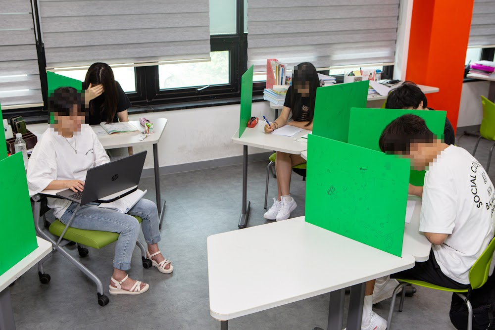
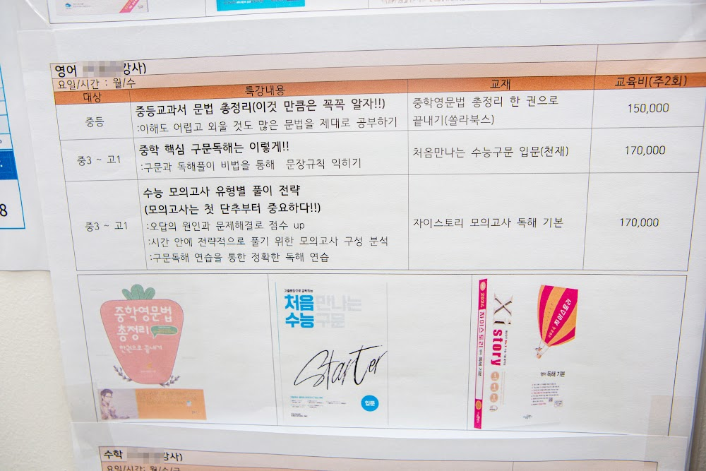
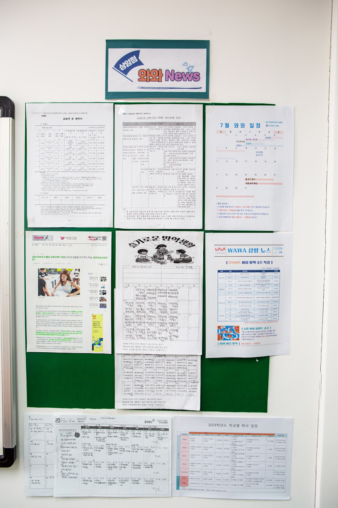

안녕하세요, 마포구 상암동 와와학습코칭 상암점입니다. "우리 아이는 책상에는 앉아 있는데 집중을 못 해요." 상담에서 가장 많이 듣는 말입니다. 오늘은 상암점이 집중력을 어떻게 다루는지 전해드립니다.
공부 시간이 아니라 '집중한 시간'이 실력입니다
세 시간 앉아 있어도 실제로 집중한 시간이 30분이면, 그 아이의 공부량은 30분입니다. 반대로 한 시간을 온전히 몰입하면 세 시간 앉아 있는 아이보다 앞섭니다. 그래서 상암점은 '몇 시간 했느냐'를 묻지 않습니다.
대신 학생에게 이렇게 묻습니다. "오늘 진짜 집중해서 푼 문제가 몇 개야?" 처음엔 대답을 못 하던 아이들도, 몇 주가 지나면 자기 집중 상태를 스스로 알아차리기 시작합니다.

30분 몰입 훈련
집중력은 타고나는 것이 아니라 훈련으로 늘어나는 근육에 가깝습니다. 상암점은 짧은 몰입부터 시작합니다.
- 휴대폰은 가방 밖, 눈에 보이지 않는 곳에
- 30분 동안 한 과목만 — 중간에 다른 과목 펼치지 않기
- 30분 뒤 5분 휴식, 이 사이클을 반복
- 집중이 깨진 순간을 스스로 기록해 보기
처음엔 30분도 힘들어하던 학생이 몇 주 뒤엔 한 시간을 버팁니다. 중요한 건 시간이 아니라, 스스로 집중을 관리할 수 있다는 감각을 갖는 것입니다.

집중이 되는 환경을 만들어 줍니다
집이 아니라 센터에 와서 공부하면 잘 되는 이유는 단순합니다. 주변이 다 공부하고 있기 때문입니다. 상암점은 조용한 학습 공간과 함께, 코치 선생님이 수시로 학생의 상태를 확인합니다. 멍하니 있는 시간이 길어지면 바로 다가가 방향을 잡아줍니다.
집중은 의지의 문제가 아니라 환경과 습관의 문제입니다. 상암동 학부모님들, 아이를 다그치기 전에 집중할 수 있는 환경부터 만들어 주세요. 저희가 함께 하겠습니다.
와와학습코칭 상암점은 이런 학생들과 함께합니다
상암동 와와학습코칭(와와학습코칭 상암점)은 초등학생·중학생·고등학생 모두를 위한 자기주도학습 공간입니다. 조용한 자습실과 공부방처럼 편하게 머물며 공부할 수 있고, 영수학원·종합학원처럼 과목별 코칭도 함께 받을 수 있습니다.
- 초등학생 (초1·초2·초3·초4·초5·초6) — 공부 습관과 기초 개념부터. 상암동 초등 영어학원·수학학원·공부방을 찾으신다면.
- 중학생 (중1·중2·중3) — 내신·서술형 대비. 상암동 중등 영수학원·자습실이 필요한 학생에게.
- 고등학생 (고1·고2) — 내신과 수능을 함께. 상암동 고등 종합학원·자기주도학습 코칭.
와와학습코칭 상암점 인근 학교
상암동 와와학습코칭(와와학습코칭 상암점)은 인근 학교 학생들의 내신·수능을 함께 준비합니다. 아래 학교에 다니는 학생이라면 영어학원·수학학원·국어학원을 따로 찾을 필요 없이, 가까운 우리 센터에서 과목별 1:1 자기주도학습 코칭을 받을 수 있습니다.
- 인근 초등학교 — 중동초등학교, 상지초등학교, 상암초등학교 영어학원·수학학원·국어학원
- 인근 중학교 — 상암중학교, 중암중학교, 성산중학교, 성사중학교, 덕은한강중학교 영어학원·수학학원·국어학원
- 인근 고등학교 — 상암고등학교, 예일여고등학교, 대성고등학교, 숭실고등학교, 가재울고등학교 영어학원·수학학원·국어학원
📍 와와학습코칭 상암점 센터 정보 자세히 보기 — 주소·전화·인근 학교 안내를 확인하실 수 있습니다.